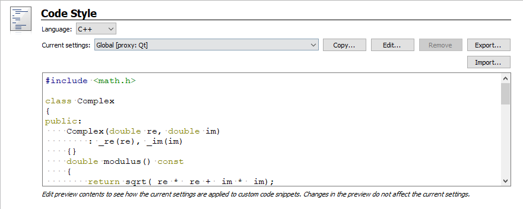
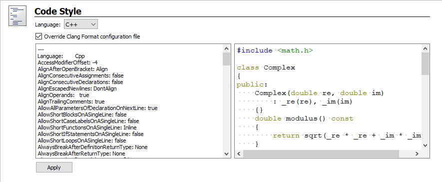
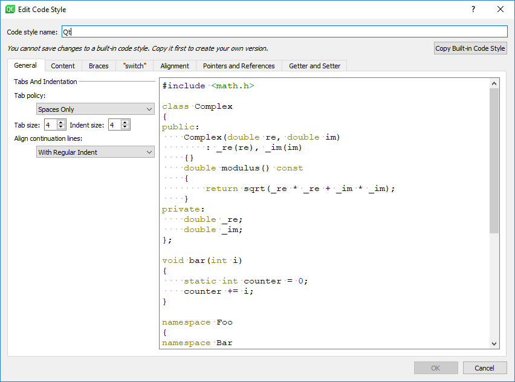
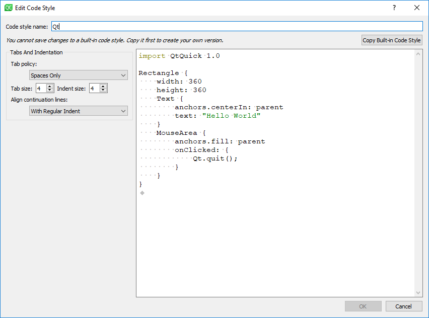

Specifying Code Style Settings
Qt Creator uses the MIME type of the file to determine which mode and editor to use for opening the file. Qt Creator opens C++ files in Edit mode in the C++ code editor and QML files in the Qt Quick editor.
You can configure the code style according to your needs. You can specify code style either globally for all projects or separately for each project. You can specify several sets of code style settings and easily switch between them. In addition, you can import and export code style settings.

Alternatively, you can enable the Clang Format plugin to enforce the code style specified in a .clang-format file. It uses the LibFormat library for automatic code formatting and indentation. For more information, see Automatic Formatting and Indentation.

To specify global code style settings sets for C++ files, select Tools > Options > C++.
To specify global code style settings sets for QML files, select Tools > Options > Qt Quick.
To configure the editor behavior for the current project:
- Select Projects > Project Settings > Code Style.
- In the Language field, select C++, Qt Quick, or Nim.
- In the Current settings field, select the settings to modify and click Copy.
- Give a name to the settings and click OK.
- Click Edit to specify code style settings for the project.

Note: Only General settings are available for QML files.

For more information about the settings, see Indenting Text or Code.